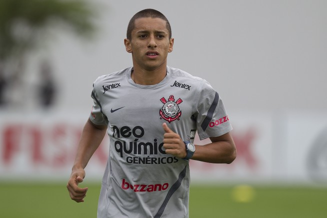

Clique Aqui para voltar
Clique Aqui para voltar
Cria do terrão se torna destaque negativo na seleção após perder pênalti decisivo.
Confira os detalhes da eliminação da seleção
Na semi-final que a seleção Brasileira disputou contra a nação da Croácia, a disputa por pênaltis deixou os jogadores com seus nervos à flor da pele; O choque veio quando estavam faltando 4 minutos para o fim da partida, onde os jogadores levaram um gol inesperado de um contra-ataque bem montado dos croatas, empatando a partida e a levando para os pênaltis. A disputa foi conturbada e com muitas críticas, começando pela ordem das cobranças, onde o jovem Rodrygo(Real Madrid) abriu o confronto e acabou perdendo o pênalti, e também pelo fato do Neymar não chegar a fazer sua cobrança. A responsabilidade do pênalti que iria manter a seleção em pé no duelo ficou nas mãos de Marquinhos(PSG), jogador que foi formado nas categorias de base do Timão.

O destaque negativo veio pois Marquinhos bateu seu pênalti muito mal, acertando a trave, assegurando a vitória da seleção croata e sua classificação para a semi-final da Copa do Mundo, adiando o sonho do Hexa.
Após 10 dias da eliminação, o jogador brasileiro quebrou o silêncio para comentar sobre tal fato: